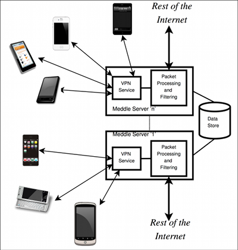

Meddle, a framework that combines virtual private networks (VPNs) with middleboxes to provide an experimental platform that aligns the interests of users and researchers. Meddle relies on VPN tunnels to access the mobile traffic regardless of the device, OS, wireless technology, and carrier. Meddle can thus provide a continuous and comprehensive view of how mobile devices interact with the Internet. Once packets arrive at a Meddle server, we use a variety of middlebox approaches to interpose on mobile-device traffic.
Meddle offers new opportunities for measuring and characterizing mobile traffic, and designing new in-network features to improve the mobile experience. For example, by accessing network traffic regardless of the wireless technology we can analyze how different operating systems and apps offload their traffic from cellular networks to Wi-Fi. To improve the user experience, we implement packet filters to block ads; unlike existing packet filters for mobile devices, the packet filters provided by Meddle do not require jail-breaking the mobile device. Furthermore, Meddle provides a vantage point for separating mobile-network performance from server-side performance, thus improving bottleneck identification for mobile applications. Meddle also enables researchers to investigate what-if scenarios for the impact of new middleboxes as if they were deployed in carrier networks. For example, Meddle can be used to deploy anonymization systems such as Privad.

Architecture for Meddle. Click image for full version.
We are in the early stages of Meddle development, so we provide only a few white paper summaries at the moment. We will updated the list below as Meddle matures.
{kind=link}